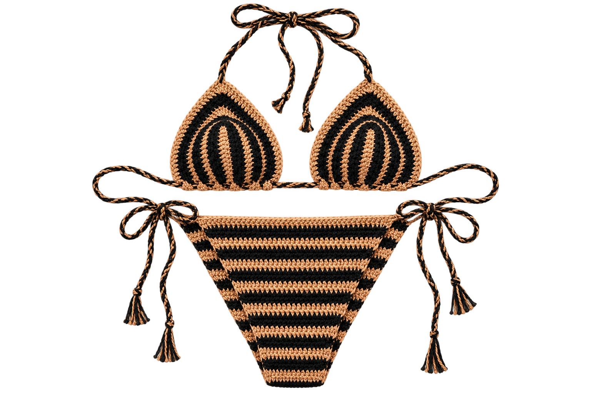

The finished piece, made from this pattern. What you buy is the written pattern for it — not the item shown.
Digital crochet pattern
Sienna Bikini Set
Tan and black, tied at four points. A weekend project.
₹450 rupees PDF pattern · instant download
- Skill level Confident beginner
- Time to make About 9 hours
- Sizes written XS to XXL — the ties set the final fit at four points
- Pattern length 20-page PDF
What is in the file
- Written instructions, row by row, in UK and US terms
- Stitch charts for every motif and panel
- Step photos for the joins and the shaping
- A yarn substitution guide and a gauge swatch checklist
- Lifetime access — re-download whenever an update lands
- A fit-adjustment sheet for lengthening or shortening every tie
Before you cast on
- Yarn
- Cotton-nylon blend, 4ply. 150–220g in tan, 90g in black.
- Hook
- 3mm hook. 2.5mm for the braided cords.
- Other bits
- Swimwear lining fabric, tapestry needle, a fork or card for the tassels.
- Gauge
- 24 stitches and 28 rows to 10cm in double crochet, worked firmly.
Stitches you will use
- Working a triangle by decreasing on both edges
- Carrying a stripe through a cord
- Braiding and finishing tassels
- Attaching a swimwear lining by hand
Small pieces, simple shaping, plenty of ties. A good first garment.
Both pieces tie — at the neck, the back and each hip — so the fit is set by the person wearing it rather than guessed by the pattern. The braided cords are written long on purpose, with a note on where to trim.
Crocheted in a tight stitch that holds its shape wet. The pattern is firm about tension here and includes a wet-stretch test, so your gauge swatch tells you the truth before you commit to a whole set. The stripe carries through the cord as well as the body, which is a slow way to do it and worth it — that method is charted.
Notes from the studio
- Sizing
- Cup shaping is written as a stitch count you adjust, not a fixed size. The maths is on page 6.
- Yarn swaps
- Needs nylon content. Pure cotton sags when wet — the pattern explains why.